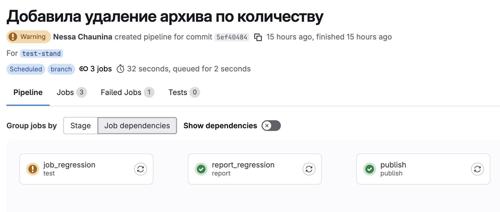
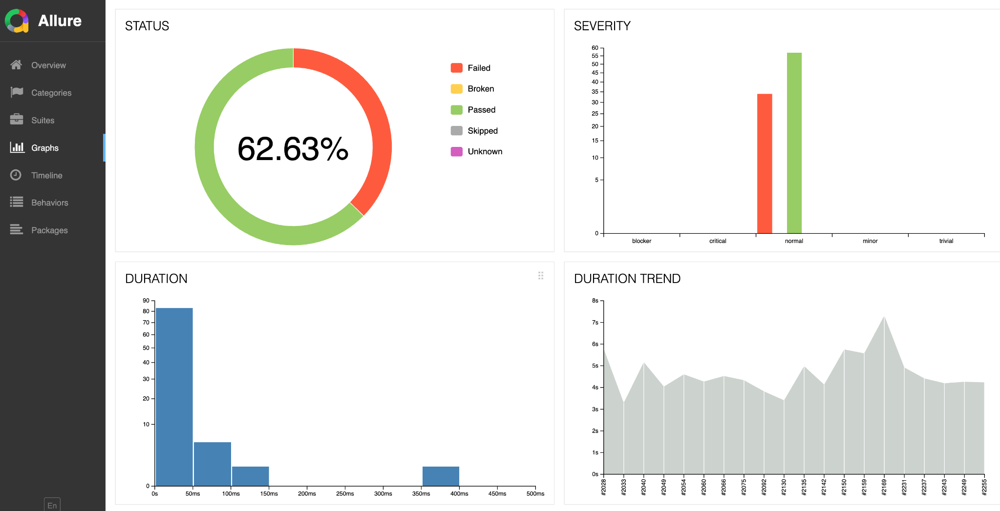
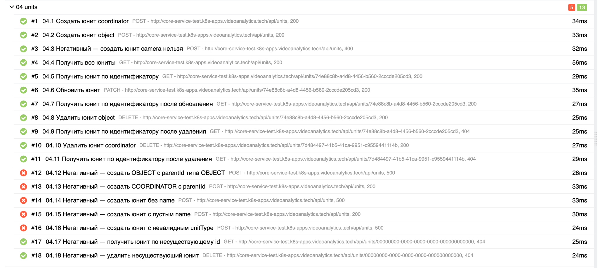
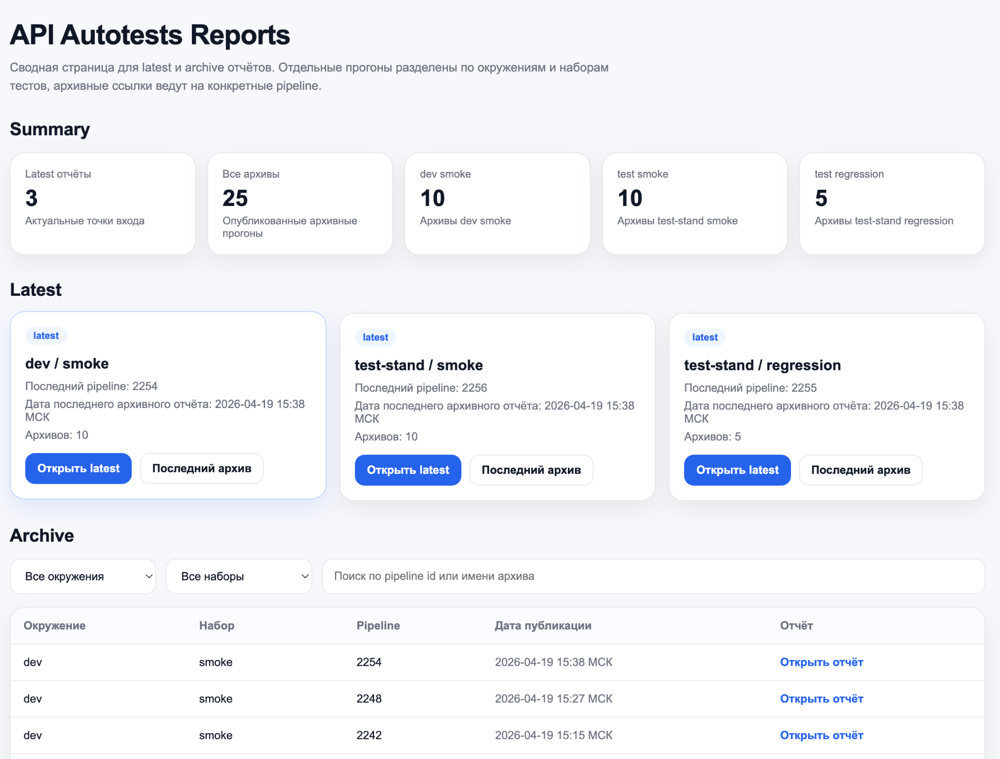

Публичная демонстрация проекта по автоматизации API-тестирования. Репозиторий показывает структуру smoke и regression сценариев, запуск через GitHub Actions, генерацию Allure-отчётов и организацию CI/CD процесса для командной работы.
Автоматический запуск smoke тестов и отдельный ручной запуск regression сценариев через GitHub Actions.

Генерация отчётов, метаданных запуска и подготовка структуры для анализа результатов тестирования.

Структура smoke и regression наборов, запуск коллекций Newman и сохранение артефактов выполнения.

Отдельная HTML-страница для сводного просмотра latest и archive отчётов с фильтрацией и статистикой.
